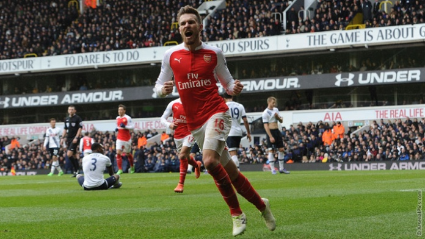
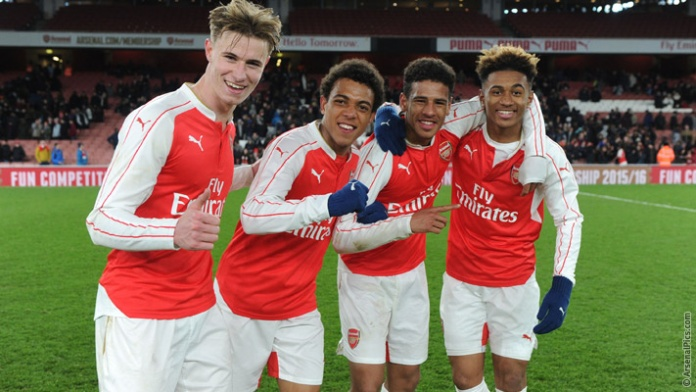

The 10-man Gunners rescued a 2-2 draw in the north London thanks to Alexis Sanchez's late
strike - but their title chances have still been damaged.
A show of character at last from Arsenal, probably too little and too late to save their title chances, but at least it might be enough to prevent the Premier League trophy going to their bitter north London rivals.

Neither side will be happy with a 2-2 draw that was as much 'typical Arsenal' as it was 'Spursy'. Leicester and Manchester City are the beneficiaries from a pulsating north London derby on Saturday that both sides will feel they should have won.
The regret for Arsenal will be the red card shown to Francis Coquelin in the 55th minute, a moment of madness as he slid in on Harry Kane when already booked. The Frenchman had his head in his hands before he even got to his feet to see the red card in the referee's hand.
Arsenal U18 2 - 1 Liverpool U18. Match Report.
Arsenal Under-18s set up a FA Youth Cup semi-final clash against Manchester City with an impressive 2-1 win over Liverpool on Friday.

The Gunners were good value for their victory and were unlucky not to take the lead before the break, with Ismael Bennacer rattling the crossbar from a whipped free-kick.
However, Steve Gatting's side took the lead immediately after the restart when Stephy Mavididi prodded home from close range, but were pegged back three minutes later by Conor Masterson.
Arsenal refused to sit back though, and Hinds secured victory just before the hour mark to send the Gunners into the last four of the competition.
For more articles go to News
Follow us on social media.
 Welcome to my own Arsenal Football Club Site!!!
Welcome to my own Arsenal Football Club Site!!!
 Hull City - Arsenal
Hull City - Arsenal  Tottenham 2 - 2 Arsenal
Tottenham 2 - 2 Arsenal